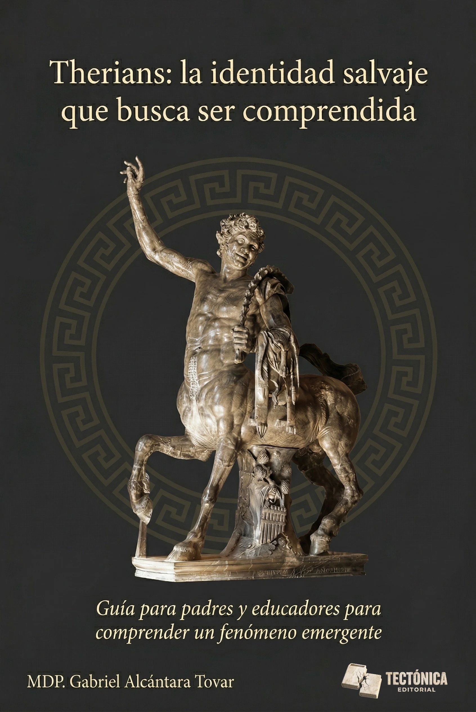

Español Disponible · CC BY-NC-ND 4.0Psicología · Identidad · Alterhumanidad · Ética Digital
Therians: la identidad salvaje que busca ser comprendida
La primera guía en español sobre therianthropy
¿Qué es ser therian? No es una moda ni un trastorno: es una forma de identidad que millones de personas en todo el mundo describen como la experiencia de identificarse, a nivel profundo, con un animal no humano. Con base en evidencia académica, 21 testimonios directos y análisis desde la psicología, la historia y la ética digital, este libro ofrece a padres, educadores, psicólogos e investigadores las herramientas para entender —no juzgar— a quien dice ser algo más que humano. Therianthropy, otherkin, identidad animal, alterhumanidad, comunidad therian en español, guía para familias, educadores y therianos.